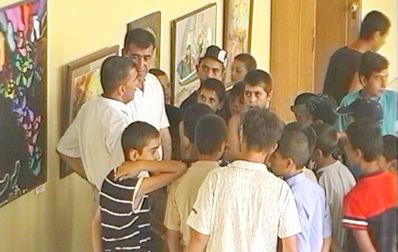
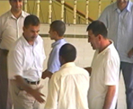
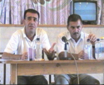
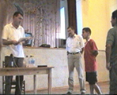
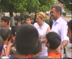
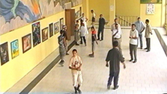

МИРОТВОРЧЕСКИЙ ДЕСАНТ В АРАРАТЕ
Село Арарат (бывшее Давалу), одно из самых крупных сел Армении, граничит и с Азербайджаном (Нахичевань) и с Турцией. Оно примечательно еще и тем, что здесь родился и жил Вазген Сарксян - основатель регулярной армии Армении, бывший министр обороны, премьер-министр РА, трагически погибший во время теракта в парламенте. Все мужское население села, за исключением пекаря (двоюродного брата В.Сарксяна) участвовало в боевых действиях во время армяно-азербайджанского конфликта. Последующая замороженность в процессе урегулирования привела к полной изоляции, прервались дружеские и экономические связи, которые существовали между Араратом и Садараком на протяжении всей истории этих населенных пунктов.
В Арарате проживали десятки азербайджанских семей. Они успели продать свои квартиры и эмигрировать сразу же после сумгаитских событий. Межнациональных столкновений в селе не было. Как сказал один из жителей: Возможно ли, обидеть людей, с которыми мы сидели за одним столом, делили хлеб и воду?!
Организационная поддержка проекту была оказана сельским управлением и партией «Анрапетутюн». Уже в первый день было много посетителей выставки.
Она задержалась в Арарате по просьбе директора Дома культуры. Нас попросили оставить картины, чтобы их посмотрели участники молодежного фестиваля.
На второй день (уже с Рауфом Раджабовым) в программу было включено посещение Дома-музея Вазгена Сарксяна. Этa сложившаяся традиция для гостей села, но азербайджанец здесь был впервые. После посещения музея, во дворе Дома культуры мы встретили группу подростков. У них было много вопросов к Рауфу:
- Сколько школ в Азербайджане?
- Во сколько лет идут в школу?
- Сколько лет служат в армии?
- Есть ли пленные армяне в Азербайджане?
- Где девушки красивее - в Армении или Азербайджане?
(Согласились на том, что красивые девушки есть везде. И если бы были открыты границы, можно было бы влюбляться друг в друга).
- Умеют ли в Азербайджане играть футбол?
- Если бы открылись границы, мы бы играли в футбол с ребятами из соседнего Садарака. Когда это будет возможно?
Р. Раджабов позже поделился своими впечатлениями: Я был потрясен встречей с детьми. Знал, что это дети участников войны, которые возможно потеряли своих близких. В их глазах не было ненависти ко мне. Это очень важно. После показа фильмов состоялась беседа обсуждение с жителями села. Поскольку мы тематически не ограничивали круг вопросов и подчинили обсуждение потребностям аудитории, разговор шел в основном на политические темы. Сегодня брат Вазгена Сарксяна- Арам, бывший премьер-министр РА, возглавляет одну из влиятельных оппозиционных партий в Армении, и жители его родного села, большинство из которых члены партии «Анрапетутюн», непосредственно вовлечены в политическую жизнь Армении. В связи с этим их больше всего интересовала внутриполитическая жизнь в Азербайджане, парламентские выборы и те изменения, которые ожидаются после них.
В Арарате проживали десятки азербайджанских семей. Они успели продать свои квартиры и эмигрировать сразу же после сумгаитских событий. Межнациональных столкновений в селе не было. Как сказал один из жителей: Возможно ли, обидеть людей, с которыми мы сидели за одним столом, делили хлеб и воду?!
Организационная поддержка проекту была оказана сельским управлением и партией «Анрапетутюн». Уже в первый день было много посетителей выставки.
Она задержалась в Арарате по просьбе директора Дома культуры. Нас попросили оставить картины, чтобы их посмотрели участники молодежного фестиваля.
На второй день (уже с Рауфом Раджабовым) в программу было включено посещение Дома-музея Вазгена Сарксяна. Этa сложившаяся традиция для гостей села, но азербайджанец здесь был впервые. После посещения музея, во дворе Дома культуры мы встретили группу подростков. У них было много вопросов к Рауфу:
- Сколько школ в Азербайджане?
- Во сколько лет идут в школу?
- Сколько лет служат в армии?
- Есть ли пленные армяне в Азербайджане?
- Где девушки красивее - в Армении или Азербайджане?
(Согласились на том, что красивые девушки есть везде. И если бы были открыты границы, можно было бы влюбляться друг в друга).
- Умеют ли в Азербайджане играть футбол?
- Если бы открылись границы, мы бы играли в футбол с ребятами из соседнего Садарака. Когда это будет возможно?
Р. Раджабов позже поделился своими впечатлениями: Я был потрясен встречей с детьми. Знал, что это дети участников войны, которые возможно потеряли своих близких. В их глазах не было ненависти ко мне. Это очень важно. После показа фильмов состоялась беседа обсуждение с жителями села. Поскольку мы тематически не ограничивали круг вопросов и подчинили обсуждение потребностям аудитории, разговор шел в основном на политические темы. Сегодня брат Вазгена Сарксяна- Арам, бывший премьер-министр РА, возглавляет одну из влиятельных оппозиционных партий в Армении, и жители его родного села, большинство из которых члены партии «Анрапетутюн», непосредственно вовлечены в политическую жизнь Армении. В связи с этим их больше всего интересовала внутриполитическая жизнь в Азербайджане, парламентские выборы и те изменения, которые ожидаются после них.
Регион Арарат
25-26 июля, 2005
Кавказский Центр Миротворческих Инициатив
при поддержке Южнокавказского офиса фонда Генриха Белла
25-26 июля, 2005
Кавказский Центр Миротворческих Инициатив
при поддержке Южнокавказского офиса фонда Генриха Белла




Вопрос: Мы только что видели в фильме, что беженцы в Азербайджане живут в нечеловеческих условиях, это не жизнь, эти вагончики и лачуги. Правительство Азербайджана уже много лет заявляет о своих богатых нефтяных ресурсах и доходах. Почему не помогает правительство беженцам, не обеспечивает минимальных условий для жизни? Нет ли в этом политики?
Р. Раджабов: Любая война она настолько ущербна, что несмотря на большие ресурсы, страна не может полноценно помочь беженцам. Но есть изменения к лучшему. Полтора года назад Ильхам Алиев издал указ в соответствии с которым все беженцы должны быть обеспечены временными домиками, и некоторая часть сейчас уже живет в них, но их много, уже более миллиона, и трудно решить этот вопрос сразу.
Рауф Раджабов обрисовал предвыборную ситуацию в Азербайджане. Рассказал о том, что является членом недавно созданного предвыборного блока «Ени Сиасат» и представил в общих чертах позицию своих соратников. Есть реальные предпосылки проведения справедливых парламентских выборов, которые приведут к легитимации законодательной власти и к осуществлению более эффективной политики во всех областях, в том числе и в разрешении конфликта. Есть политические силы в Азербайджане, которые выступают за восстановление экономических отношений с Арменией как базы для начала политического урегулирования. Мы, все граждане Азербайджана, ждем демократических выборов и нового легитимного парламента. Блок «Ени Сиасат» видит решение карабахской проблемы в региональной интеграции. Естественно, что, например, для развития Арарата необходимы экономические отношения с Турцией и Нахичеванью. Здесь нет альтернативы. Только через экономику возможно развитие.
Участники встречи выразили свою озабоченность тем, что не только определенные политические силы, так называемая «партия войны», но и президент Азербайджана допускает в своих выступлениях воинствующие высказывания, что противоречит обязательствам Азербайджана перед Советом Европы по урегулированию конфликта.
Рауф Раджабов: В обществе Азербайджана есть негативное отношение к Армении. К сожалению, информационный вакуум и нагнетание в СМИ играют свою роль, вместе с тем СМИ не отражают реальных настроений в обществе. Отношение в основном негативно. Но вне зависимости от этого, мы ведем свою линию, если прислушиваться к противникам, мы не сможем добиться ничего.
В настоящее время наблюдаются тенденции снижения воинствующих настроений, но кардинальных перемен нужно ждать после парламентских выборов. Президент Ильхам Алиев избегает в своих выступлениях заявлений о войне. Но есть люди, которые хотят представить президента сторонником насильственных действий. Война не выгодна Азербайджану. Очень важным и показательным является заявление министра социального развития АР, человека авторитетного и играющего немаловажную роль в выработке политики. Он заявил о том, что Азербайджан готов вложить в экономическое развитие Карабаха 26 млрд. долларов. То есть экономическое развитие страны, ожидаемые нефтяные доходы будут направлены на решение проблемы мирным путем.
Немаловажную роль играет общество в разрешении конфликта. Мне было очень приятно присутствовать в Ереване на конференции, проведение которой стало возможным благодаря вкладам граждан Армении. Это очень важно - участие и заинтересованность общества в урегулировании конфликта. Это знаковый шаг. Часть общества Армении, пусть сегодня это только двадцать человек, проявила гражданскую ответственность. Я знаю, что эта инициатива была поддержана также братом Вазгена Саркисяна и это неоценимо.
Георгий Ванян: Хочу отметить, что Рауф Раджабов представляет общественную организацию «Мир, демократия и культура», основная позиция которой рассматривать урегулирование конфликта с точки зрения защиты прав человека, людей проживающих в зоне конфликта. И это очень важный подход и очень важно, что мы находим взаимопонимание по этому вопросу. Защита прав человека, права людей жить и жить в безопасности должна выдвигаться правозащитными организациями и наш голос будет услышан только тогда, когда мы будем поднимать эти вопросы вместе: я – в Армении и Рауф Раджабов в Азербайджане. Нам надо выйти из заколдованного круга, когда каждый из нас говорит о своем и создается вакуум общественного участия в процессах урегулирования конфликта.
Вопрос: Каково отношение азербайджанского народа к армянам?
Рауф Раджабов: Прошу понять меня правильно. Такого звериного отношения, как вы представляете, этого нет. Каждый человек прежде всего хочет жить, работать, учиться, жениться, иметь детей, семью. И это самое важное для людей.
Отвечая на вопрос участников встречи о провозглашении Рамиля Сафарова национальным героем, Раджабов рассказал о том, что сразу же после событий в Будапеште, очень многие представители интеллигенции, участники боевых действий осудили это преступление. К сожалению, об этом не стало известно в Армении. А искусственность кампании в защиту Сафарова была подтверждена ее недолговечностью. Ни один нормальный человек не может считать убийцу героем – на этом нельзя заработать политические дивиденды.
Георгий Ванян: Трагедия, которая случилась в Будапеште, есть результат политики наших государств и молчания общества. Трагедия в Будапеште могла бы стать для всех нас «холодным душем», доказательством того, что генерация ненависти друг к другу - преступление. Она стала доказательством того, что мы переступили черту, доказательством того, что наша идеология приводит к новым жертвам. Я с болью констатирую, что мы и на этот раз остались слепы и глухи. И в Армении, и в Азербайджане Будапештская трагедия вызвала новую волну националистической истерии. Некоторые представители общественности в Азербайджане пошли против этой волны, призвали общество не создавать «новых героев» из преступника. Некоторые представители общественности в Армении, осудили фашиствующие заявления, которые звучали в Армении даже из уст государственных деятелей на фоне широкой антиазербайджанской истерии развернутой в СМИ. Это очень важно, но этого мало. Трагедия в Будапеште должна была изменить всех нас, но этого не случилось.
Один из участников: У нас нет выбора – надо восстанавливать отношения. И чем раньше мы начнем, тем легче нам будет. Вечных врагов не бывает. Мы веками жили рядом и сейчас нам нужно поле для общения как с азербайджанцами, так и с турками живущими по соседству. Наши дети должны будут жить вместе.
На вопрос Г. Ваняна о том, чем можно объяснить, можно сказать, нестандартную толерантность детей и их интерес к Азербайджану, один из присутствующих ответил: Я думаю, человек прошедший войну, человек, который прошел все ужасы – не может говорить, рассказывать об этом. Мы не говорим о войне, особенно не рассказываем о ней своим детям. Эти воспоминания уйдут вместе с нами.
* * *
После встречи к гостям подошла делегация подростков с просьбой уточнить возможные сроки футбольного матча с их ровесниками из Садарака. Георгий Ванян обещал сделать все возможное, чтобы реализовать этот проект, отметив, что важно, найти поддержку и в Азербайджане. Рауф Раджабов обещал заняться этим после выборов.
Гриша Мелконян, глава сельской администрации: Идея детей о футболе продиктована рассказами взрослых. В советское время мы часто ехали в Садарак и устраивали футбольные матчи. Я готов взять на себя эту огромную ответственность и оказать поддержку в организации встречи наших детей. Детей двух соседних сел Арарата и Садарака. Наши дети растут в семьях, которые имели друзей азербайджанцев, и взрослые много рассказывают о мирных временах. Азербайджанцам есть место в истории каждой из наших семей. Я надеюсь, что и азербайджанцы помнят о нас, о мирных временах. Мы живем на границе и поэтому неизбежно втягивались в войну и защищали свою землю и свои дома. Но вместе с тем, в мирное время у нас были братские отношения, мы дружили и помогали друг другу. В советское время снабжение Армении продуктами было лучше, чем в Азербайджане. Из Садарака ехали к нам за маслом, сахаром и другими продуктами, также везли свои товары на наш рынок.
